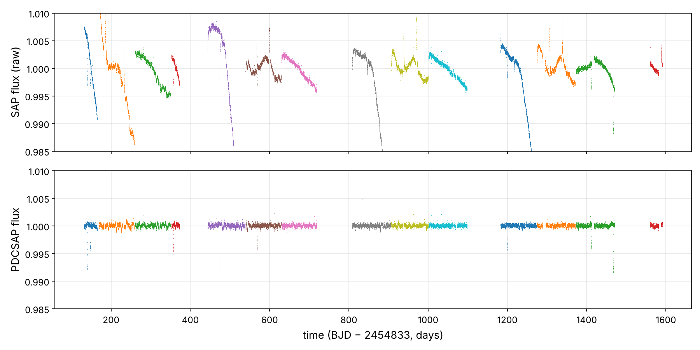
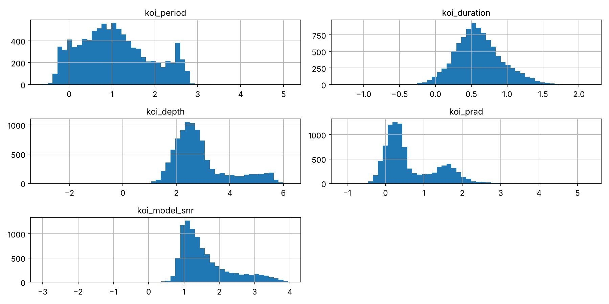
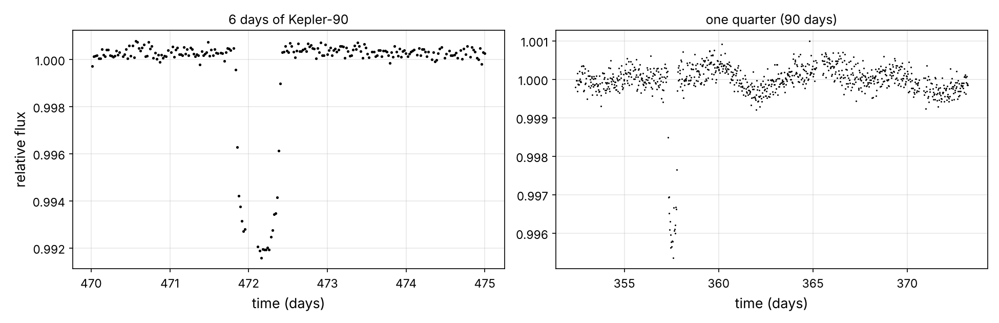
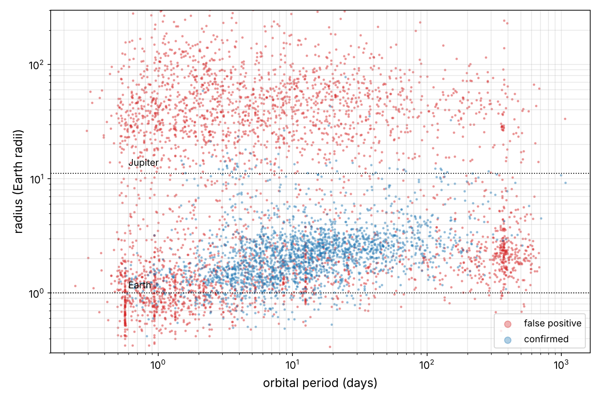
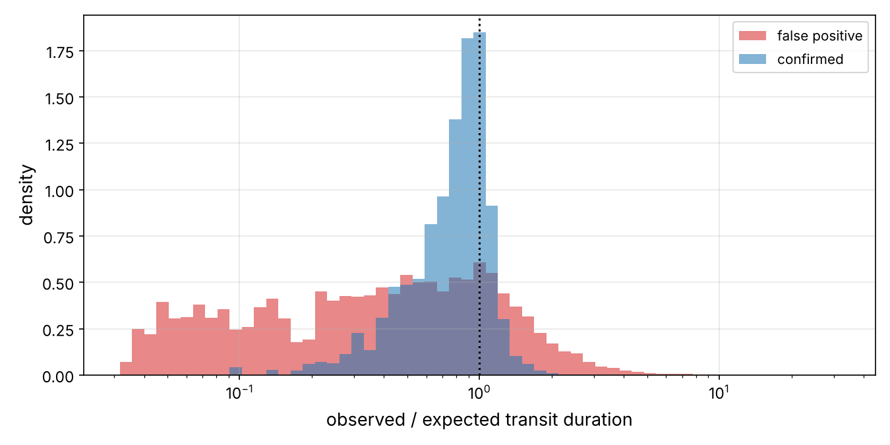
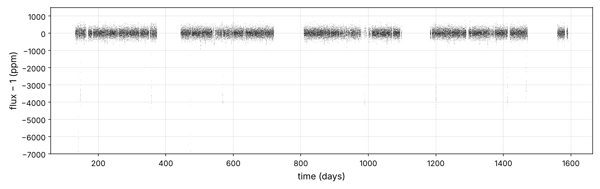
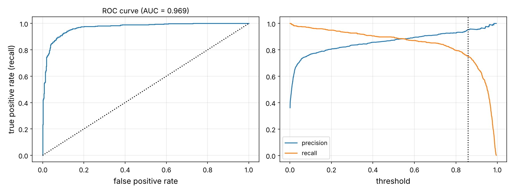
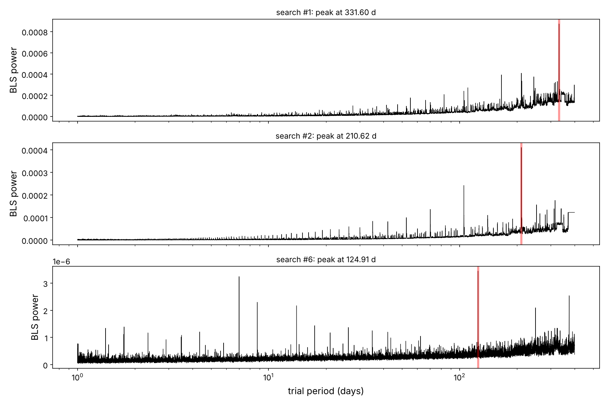
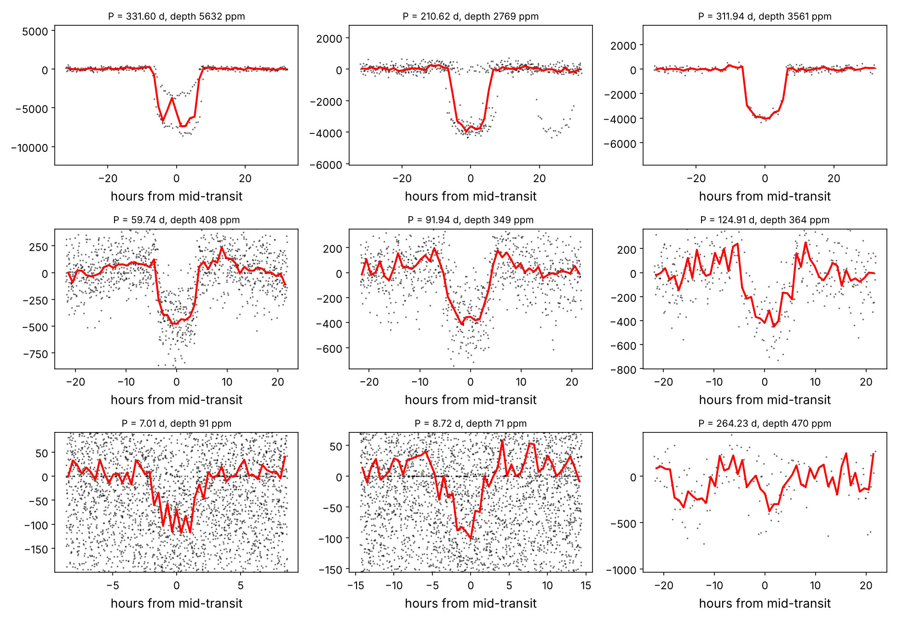
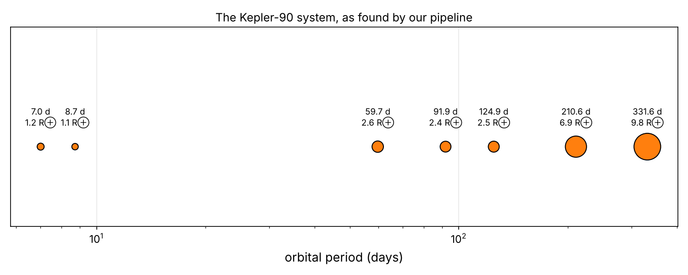

Hunting Exoplanets in
NASA Kepler Data
In this chapter you will go through a fifth project end to end, pretending to be a data scientist on NASA's Kepler mission. For four years, the Kepler space telescope stared at one patch of sky in the constellations Cygnus and Lyra. It measured the brightness of about 150,000 stars every 30 minutes, looking for the tiny, regular dimming caused by a planet passing in front of its star. Your job has two parts. First, build a search that finds those dimmings in raw data. Then build a classifier that decides which detections are real planets and which are impostors.1 The main steps are the usual ones:
- Look at the big picture.
- Get the data.
- Discover and visualize the data to gain insights.
- Prepare the data for Machine Learning algorithms.
- Select a model and train it.
- Fine-tune your model.
- Present your solution.
- Launch, monitor, and maintain your system.
This chapter is the closest of the series to classic ML. Its core is a binary classifier on a table of about 7,600 labeled examples, with all the tools of the trade: pipelines, imputation, feature engineering, randomized search, ROC curves and precision/recall trade-offs. But the "launch" is real astronomy. We'll run the full system on the star Kepler-90, which has eight known planets, as many as our Sun. Then we'll see how many our pipeline can find on its own.
Working with Real Data
| Dataset | Kind | Content |
|---|---|---|
| Kepler long-cadence light curves of Kepler-90 (KIC 11442793), from NASA's MAST archive | raw telescope data | 54,400 brightness measurements over 4 years (14 quarters), raw (SAP) and systematics-corrected (PDCSAP) flux |
| Kepler Objects of Interest (KOI) cumulative table, NASA Exoplanet Archive | NASA catalog | 9,564 transit-like signals with their properties and dispositions: confirmed planet, false positive, or still a candidate |
The notebook exoplanet_project.ipynb runs in about 3 minutes. It caches the light curve as a CSV in datasets/kepler/, so it runs offline. Downloading from MAST again needs the astroquery and astropy packages.
Look at the Big Picture
Frame the Problem
Our system has two components, in a pipeline. The first is a detector: given a light curve, find periodic dips. That's a search problem, more like unsupervised anomaly detection than classic ML. The second is a vetter: given a detected signal and its host star, estimate the probability that it is a planet. That one is supervised binary classification, trained on the KOIs that astronomers already confirmed or rejected, mostly by expensive follow-up observations. It's batch learning on a tabular dataset of a few thousand rows.
The downstream use matters for how we evaluate it. Follow-up time on large telescopes is scarce. If the vetter says "planet", we want it to be right (high precision), while still catching most of the planets (high recall).
Select a Performance Measure
Accuracy is a poor guide when classes are imbalanced and errors have different costs. We'll use the ROC AUC: the probability that a randomly chosen planet is ranked above a randomly chosen false positive. It's 0.5 for random guessing and 1 for perfect ranking, and it doesn't depend on any threshold. Then we'll choose a decision threshold from the precision and recall curves:
Check the Assumptions
- The labels are right. "Confirmed" and "false positive" are the best current knowledge, and a few are surely wrong. Labels can change: dispositions are updated as follow-up arrives.
- The training set represents the future. KOIs were found by NASA's own pipeline. Our detector is different. If our features are computed differently from the catalog's, the classifier will see different inputs in production than in training (training/serving skew). We'll check.
- Planets in the same system are not independent. They share their star's properties, which matters for splitting.
Get the Data
pip install -U jupyter numpy pandas matplotlib scipy scikit-learn astropy astroquery.
# Python ≥3.8 is required
import sys
assert sys.version_info >= (3, 8)
# Scikit-Learn ≥1.0 is required
import sklearn
assert sklearn.__version__ >= "1.0"
# Common imports
import os
import numpy as np
import pandas as pd
# To make this notebook's output stable across runs
np.random.seed(42)
# To plot pretty figures
import matplotlib as mpl
import matplotlib.pyplot as plt
mpl.rc('axes', labelsize=13)
mpl.rc('xtick', labelsize=11)
mpl.rc('ytick', labelsize=11)
# Where to save the figures
PROJECT_ROOT_DIR = "."
IMAGES_PATH = os.path.join(PROJECT_ROOT_DIR, "images")
os.makedirs(IMAGES_PATH, exist_ok=True)
def save_fig(fig_id, tight_layout=True, fig_extension="png", resolution=150):
path = os.path.join(IMAGES_PATH, fig_id + "." + fig_extension)
print("Saving figure", fig_id)
if tight_layout:
plt.tight_layout()
plt.savefig(path, format=fig_extension, dpi=resolution)
Download the Data
Kepler data live at the Mikulski Archive for Space Telescopes (MAST). astroquery finds all the long-cadence light-curve files of a star, and astropy reads them (they are FITS files, the standard astronomy format). We keep the useful columns and cache them as a CSV:
DATASETS_PATH = "datasets"
KEPLER90_KIC = 11442793
def fetch_kepler_light_curve(kic=KEPLER90_KIC, path=os.path.join(DATASETS_PATH, "kepler")):
"""Download every long-cadence quarter from NASA's MAST archive (needs astroquery
and astropy the first time), keep the useful columns, cache them as one CSV."""
os.makedirs(path, exist_ok=True)
csv_path = os.path.join(path, f"kplr{kic:09d}_llc.csv")
if os.path.exists(csv_path):
return pd.read_csv(csv_path)
from astroquery.mast import Observations
from astropy.io import fits
obs = Observations.query_criteria(target_name=f"kplr{kic:09d}", obs_collection="Kepler")
products = Observations.get_product_list(obs)
llc = products[[str(f).endswith("_llc.fits") for f in products["productFilename"]]]
manifest = Observations.download_products(llc, download_dir=path)
frames = []
for fname in sorted(manifest["Local Path"]):
with fits.open(fname) as hdul:
d, quarter = hdul[1].data, hdul[0].header["QUARTER"]
frames.append(pd.DataFrame({"time": d["TIME"], "sap_flux": d["SAP_FLUX"],
"pdcsap_flux": d["PDCSAP_FLUX"],
"pdcsap_flux_err": d["PDCSAP_FLUX_ERR"],
"quality": d["SAP_QUALITY"], "quarter": quarter}))
lc = pd.concat(frames, ignore_index=True)
lc.to_csv(csv_path, index=False)
for fname in manifest["Local Path"]: # the CSV is all we need from now on
os.remove(fname)
return lc
lc = fetch_kepler_light_curve()
lc.head()
| time | sap_flux | pdcsap_flux | pdcsap_flux_err | quality | quarter | |
|---|---|---|---|---|---|---|
| 0 | 131.512439 | 34751.586 | 39024.062 | 6.886208 | 0 | 1 |
| 1 | 131.532874 | 34765.273 | 39034.062 | 6.890465 | 0 | 1 |
| 2 | 131.553308 | 34759.652 | 39028.047 | 6.890853 | 8192 | 1 |
| 3 | 131.573742 | 34753.820 | 39028.258 | 6.882296 | 0 | 1 |
| 4 | 131.594176 | 34762.880 | 39031.824 | 6.889281 | 0 | 1 |
The KOI table comes from the NASA Exoplanet Archive's TAP service, which accepts SQL-like queries over the web:
import urllib.parse
import urllib.request
KOI_COLUMNS = ["kepid", "kepoi_name", "kepler_name", "koi_disposition", "koi_score",
"koi_fpflag_nt", "koi_fpflag_ss", "koi_fpflag_co", "koi_fpflag_ec",
"koi_period", "koi_time0bk", "koi_duration", "koi_depth", "koi_prad",
"koi_impact", "koi_model_snr", "koi_num_transits", "koi_teq", "koi_insol",
"koi_steff", "koi_slogg", "koi_srad", "koi_smass", "koi_kepmag"]
def fetch_koi_table(path=os.path.join(DATASETS_PATH, "nasa")):
os.makedirs(path, exist_ok=True)
csv_path = os.path.join(path, "kepler_koi_cumulative.csv")
if not os.path.exists(csv_path):
query = f"select {','.join(KOI_COLUMNS)} from cumulative"
url = ("https://exoplanetarchive.ipac.caltech.edu/TAP/sync?" +
urllib.parse.urlencode({"query": query, "format": "csv"}))
urllib.request.urlretrieve(url, csv_path)
return pd.read_csv(csv_path)
koi = fetch_koi_table()
koi.shape
(9564, 24)
Take a Quick Look at the Data Structure
lc.info()
<class 'pandas.DataFrame'> RangeIndex: 54400 entries, 0 to 54399 Data columns (total 6 columns): # Column Non-Null Count Dtype --- ------ -------------- ----- 0 time 52553 non-null float64 1 sap_flux 51759 non-null float64 2 pdcsap_flux 51503 non-null float64 3 pdcsap_flux_err 51503 non-null float64 4 quality 54400 non-null int64 5 quarter 54400 non-null int64 dtypes: float64(4), int64(2) memory usage: 2.5 MB
lc.groupby("quarter").agg(points=("time", "size"), start=("time", "min"), end=("time", "max")).T.round(1)
| quarter | 1 | 2 | 3 | 4 | 5 | 6 | 7 | 9 | 10 | 11 | 13 | 14 | 15 | 17 |
|---|---|---|---|---|---|---|---|---|---|---|---|---|---|---|
| points | 1639.0 | 4354.0 | 4370.0 | 1021.0 | 4634.0 | 4398.0 | 4375.0 | 4768.0 | 4573.0 | 4754.0 | 4421.0 | 4757.0 | 4780.0 | 1556.0 |
| start | 131.5 | 169.5 | 260.2 | 352.4 | 443.5 | 539.4 | 630.2 | 808.5 | 906.8 | 1001.2 | 1182.7 | 1274.1 | 1373.5 | 1559.2 |
| end | 165.0 | 258.5 | 349.5 | 373.2 | 538.2 | 629.3 | 719.5 | 905.9 | 1000.3 | 1098.3 | 1273.1 | 1371.3 | 1471.1 | 1591.0 |
Kepler rotated every three months to keep its solar panels facing the Sun, so the data come in quarters. Each quarter puts the star on a different detector, with a different sensitivity. Some quarters are missing (8, 12 and 16), because Kepler-90 fell on a failed detector module. Let's look at the raw and corrected fluxes (Figure 5-1):
fig, axes = plt.subplots(2, 1, figsize=(12, 6), sharex=True)
for q, grp in lc.groupby("quarter"):
axes[0].plot(grp["time"], grp["sap_flux"] / grp["sap_flux"].median(), ",")
axes[1].plot(grp["time"], grp["pdcsap_flux"] / grp["pdcsap_flux"].median(), ",")
axes[0].set_ylabel("SAP flux (raw)"); axes[1].set_ylabel("PDCSAP flux")
axes[1].set_xlabel("time (BJD − 2454833, days)")
for ax in axes: ax.set_ylim(0.985, 1.01); ax.grid(alpha=0.3)
save_fig("raw_light_curve_plot")
plt.show()

The raw flux jumps between quarters and drifts within each one, by far more than any planet signal. The corrected flux removes most instrumental trends. The isolated downward spikes are already visible: those are transits of Kepler-90's giant planets. Now the catalog:
koi.info()
<class 'pandas.DataFrame'> RangeIndex: 9564 entries, 0 to 9563 Data columns (total 24 columns): # Column Non-Null Count Dtype --- ------ -------------- ----- 0 kepid 9564 non-null int64 1 kepoi_name 9564 non-null str 2 kepler_name 2748 non-null str 3 koi_disposition 9564 non-null str 4 koi_score 8054 non-null float64 5 koi_fpflag_nt 9564 non-null int64 6 koi_fpflag_ss 9564 non-null int64 7 koi_fpflag_co 9564 non-null int64 8 koi_fpflag_ec 9564 non-null int64 9 koi_period 9564 non-null float64 10 koi_time0bk 9564 non-null float64 11 koi_duration 9564 non-null float64 12 koi_depth 9201 non-null float64 13 koi_prad 9201 non-null float64 14 koi_impact 9201 non-null float64 15 koi_model_snr 9201 non-null float64 16 koi_num_transits 8422 non-null float64 17 koi_teq 9201 non-null float64 18 koi_insol 9243 non-null float64 19 koi_steff 9201 non-null float64 20 koi_slogg 9201 non-null float64 21 koi_srad 9201 non-null float64 22 koi_smass 9201 non-null float64 23 koi_kepmag 9563 non-null float64 dtypes: float64(16), int64(5), str(3) memory usage: 1.8 MB
koi["koi_disposition"].value_counts()
koi_disposition FALSE POSITIVE 4839 CONFIRMED 2748 CANDIDATE 1977 Name: count, dtype: int64
koi[["koi_period", "koi_duration", "koi_depth", "koi_prad", "koi_model_snr", "koi_steff",
"koi_srad"]].describe().round(2)
| koi_period | koi_duration | koi_depth | koi_prad | koi_model_snr | koi_steff | koi_srad | |
|---|---|---|---|---|---|---|---|
| count | 9564.00 | 9564.00 | 9201.00 | 9201.00 | 9201.00 | 9201.00 | 9201.00 |
| mean | 75.67 | 5.62 | 23791.34 | 102.89 | 259.90 | 5706.82 | 1.73 |
| std | 1334.74 | 6.47 | 82242.68 | 3077.64 | 795.81 | 796.86 | 6.13 |
| min | 0.24 | 0.05 | 0.00 | 0.08 | 0.00 | 2661.00 | 0.11 |
| 25% | 2.73 | 2.44 | 159.90 | 1.40 | 12.00 | 5310.00 | 0.83 |
| 50% | 9.75 | 3.79 | 421.10 | 2.39 | 23.00 | 5767.00 | 1.00 |
| 75% | 40.72 | 6.28 | 1473.40 | 14.93 | 78.00 | 6112.00 | 1.34 |
| max | 129995.78 | 138.54 | 1541400.00 | 200346.00 | 9054.70 | 15896.00 | 229.91 |
np.log10(koi[["koi_period", "koi_duration", "koi_depth", "koi_prad", "koi_model_snr"]]
.clip(lower=1e-3)).hist(bins=50, figsize=(12, 6))
save_fig("koi_histogram_plots")
plt.show()

Everything spans many orders of magnitude. Periods run from hours to years, depths from a few ppm to 100%, and "radii" from smaller than Mercury to 200,000 Earth radii. That last one is obviously not a planet: it's a stellar eclipse. With heavy tails like these, we'll work with logarithms.
Create a Test Set
We keep only labeled KOIs. The candidates are what the model will be used on later. Two precautions: planets of the same star stay together (StratifiedGroupKFold with the star's kepid as group), and Kepler-90 is held out entirely, because it will be our final, end-to-end test:
from sklearn.model_selection import StratifiedGroupKFold
labeled = koi[koi["koi_disposition"].isin(["CONFIRMED", "FALSE POSITIVE"])].copy()
labeled["is_planet"] = (labeled["koi_disposition"] == "CONFIRMED").astype(int)
# Kepler-90 is our final, independent test: keep all of its KOIs out of everything
holdout_star = labeled["kepid"] == KEPLER90_KIC
labeled = labeled[~holdout_star]
splitter = StratifiedGroupKFold(n_splits=5, shuffle=True, random_state=42)
train_idx, test_idx = next(splitter.split(labeled, labeled["is_planet"], groups=labeled["kepid"]))
train_set, test_set = labeled.iloc[train_idx].copy(), labeled.iloc[test_idx].copy()
print(len(train_set), "train,", len(test_set), "test, shared stars:",
len(set(train_set["kepid"]) & set(test_set["kepid"])))
print("planet fraction: train %.3f, test %.3f" % (train_set["is_planet"].mean(), test_set["is_planet"].mean()))
6064 train, 1516 test, shared stars: 0 planet fraction: train 0.362, test 0.361
Discover and Visualize the Data to Gain Insights
Looking at a Light Curve
from scipy.ndimage import median_filter
good = (lc["quality"] == 0) & lc["time"].notna() & lc["pdcsap_flux"].notna()
lc_good = lc[good].copy()
lc_good["flux"] = lc_good["pdcsap_flux"] / lc_good.groupby("quarter")["pdcsap_flux"].transform("median")
len(lc), len(lc_good)
(54400, 44744)
fig, axes = plt.subplots(1, 2, figsize=(13, 4.2))
win = (lc_good["time"] > 470) & (lc_good["time"] < 476)
axes[0].plot(lc_good.loc[win, "time"], lc_good.loc[win, "flux"], "k.", ms=3)
axes[0].set_title("6 days of Kepler-90"); axes[0].set_xlabel("time (days)"); axes[0].set_ylabel("relative flux")
q = lc_good["quarter"] == 4
axes[1].plot(lc_good.loc[q, "time"], lc_good.loc[q, "flux"], "k.", ms=1)
axes[1].set_title("one quarter (90 days)"); axes[1].set_xlabel("time (days)")
for ax in axes: ax.grid(alpha=0.3)
save_fig("light_curve_zoom_plot")
plt.show()

On the left, a textbook transit: a flat-bottomed dip with sloped edges. The edges slope because the planet takes time to fully enter the star's disk, and because the star's limb is darker than its center. On the right, over a whole quarter, the star's own slow variations of a few hundred ppm are larger than most planet signals. We'll have to remove them.
Visualizing the Planet Catalog
fig, ax = plt.subplots(figsize=(9, 6))
for label, color in [("FALSE POSITIVE", "tab:red"), ("CONFIRMED", "tab:blue")]:
s = train_set[train_set["koi_disposition"] == label]
ax.scatter(s["koi_period"], s["koi_prad"], s=3, alpha=0.35, color=color, label=label.lower())
ax.set_xscale("log"); ax.set_yscale("log"); ax.set_ylim(0.3, 300)
ax.axhline(11.2, color="k", ls=":", lw=1); ax.text(0.6, 13, "Jupiter", fontsize=10)
ax.axhline(1.0, color="k", ls=":", lw=1); ax.text(0.6, 1.1, "Earth", fontsize=10)
ax.set_xlabel("orbital period (days)"); ax.set_ylabel("radius (Earth radii)")
ax.legend(markerscale=4); ax.grid(alpha=0.3, which="both")
save_fig("period_radius_plot")
plt.show()

The two classes overlap, but they are not distributed alike. False positives dominate above the size of Jupiter: anything that large is probably a star. Confirmed planets cluster between one and four Earth radii, the "super-Earths" and "sub-Neptunes" that turned out to be the most common planets in the Galaxy, although our Solar System has none.
Looking for Correlations
num = train_set[["is_planet", "koi_period", "koi_duration", "koi_depth", "koi_prad",
"koi_model_snr", "koi_steff", "koi_slogg", "koi_srad", "koi_kepmag"]]
np.log10(num.drop(columns="is_planet").clip(lower=1e-3)).assign(is_planet=num["is_planet"]) \
.corr()["is_planet"].sort_values(ascending=False).round(3)
is_planet 1.000 koi_slogg 0.151 koi_period 0.101 koi_kepmag 0.063 koi_duration -0.133 koi_model_snr -0.181 koi_srad -0.197 koi_steff -0.222 koi_depth -0.241 koi_prad -0.398 Name: is_planet, dtype: float64
The radius has the strongest (negative) correlation with being a planet, then depth and stellar temperature. As always, correlation only captures linear relationships on these log-scaled features. Tree-based models will find more.
Experimenting with Attribute Combinations
Here's where domain knowledge pays. Equation 5-2 tells us how long a transit should last for a planet on a circular orbit around a star of the catalog's density. A blended eclipsing binary has no reason to obey it: the star whose density we assume isn't the one being eclipsed. Let's create the ratio of observed to expected duration:
# Kepler's third law predicts how long a transit should last around a star of given
# density: T ≈ 13 h × (P / 1 yr)^(1/3) × (ρ★/ρ☉)^(-1/3) (central transit, circular orbit)
def expected_duration_hours(period_days, logg, srad):
rho = 10 ** (logg - 4.438) / srad # stellar density (solar units)
return 13.0 * (period_days / 365.25) ** (1 / 3) * rho ** (-1 / 3)
train_set["duration_ratio"] = train_set["koi_duration"] / expected_duration_hours(
train_set["koi_period"], train_set["koi_slogg"], train_set["koi_srad"])
train_set.groupby("koi_disposition")["duration_ratio"].describe()[["25%", "50%", "75%"]].round(2)
| 25% | 50% | 75% | |
|---|---|---|---|
| koi_disposition | |||
| CONFIRMED | 0.73 | 0.90 | 1.03 |
| FALSE POSITIVE | 0.63 | 1.09 | 1.74 |
fig, ax = plt.subplots(figsize=(9, 4.5))
bins = np.logspace(-1.5, 1.5, 60)
for label, color in [("FALSE POSITIVE", "tab:red"), ("CONFIRMED", "tab:blue")]:
ax.hist(train_set.loc[train_set["koi_disposition"] == label, "duration_ratio"], bins=bins,
alpha=0.55, color=color, label=label.lower(), density=True)
ax.set_xscale("log"); ax.set_xlabel("observed / expected transit duration"); ax.set_ylabel("density")
ax.axvline(1, color="k", ls=":"); ax.legend(); ax.grid(alpha=0.3)
save_fig("duration_ratio_plot")
plt.show()

Confirmed planets peak sharply just below 1, as expected: non-central transits are a bit shorter. False positives are spread over two orders of magnitude. This is the kind of feature a generic model would need a lot of data to discover alone, and we got it for free from Kepler's third law.
Prepare the Data for Machine Learning Algorithms
Cleaning a Light Curve
For the search, we must flatten the star's slow variations while keeping the transits. A running median over about a day removes trends longer than a day but barely touches dips of a few hours. Dividing by it leaves a flat light curve. We then clip upward outliers (cosmic rays, flares), but never downward ones, since that's where planets hide. As usual, it's a transformer with tunable hyperparameters:
from sklearn.base import BaseEstimator, TransformerMixin
class LightCurveDetrender(BaseEstimator, TransformerMixin):
"""Divide each quarter by a running median (removes stellar and instrumental drifts
slower than the window), then clip upward outliers (cosmic rays, flares)."""
def __init__(self, window_days=1.0, clip_sigma=4.0):
self.window_days = window_days
self.clip_sigma = clip_sigma
def fit(self, X, y=None):
return self
def __sklearn_is_fitted__(self):
return True
def transform(self, X):
out = []
for q, grp in X.groupby("quarter"):
size = int(self.window_days / (29.4244 / 1440)) | 1 # odd number of cadences
trend = median_filter(grp["flux"].values, size=size, mode="nearest")
out.append(pd.DataFrame({"time": grp["time"].values, "flux": grp["flux"].values / trend}))
out = pd.concat(out, ignore_index=True)
noise = 1.4826 * np.median(np.abs(out["flux"] - 1))
return out[out["flux"] < 1 + self.clip_sigma * noise].reset_index(drop=True)
detrended = LightCurveDetrender().fit_transform(lc_good)
noise_ppm = 1e6 * 1.4826 * np.median(np.abs(detrended["flux"] - 1))
print(f"{len(detrended)} points, robust noise = {noise_ppm:.0f} ppm per 29.4-minute cadence")
44720 points, robust noise = 178 ppm per 29.4-minute cadence
fig, ax = plt.subplots(figsize=(12, 3.8))
ax.plot(detrended["time"], (detrended["flux"] - 1) * 1e6, "k,", alpha=0.5)
ax.set_ylim(-7000, 1500); ax.set_xlabel("time (days)"); ax.set_ylabel("flux − 1 (ppm)")
ax.grid(alpha=0.3)
save_fig("detrended_light_curve_plot")
plt.show()

The noise is now about 180 ppm per half-hour, and the deep transits stand out. The shallow ones are invisible to the eye: they are hidden below the noise, and only a search that stacks many transits can find them.
Transformation Pipelines
For the classifier, numerical features need imputing (a few hundred KOIs lack stellar parameters), log-transforming (heavy tails) and scaling. The transit features and the stellar features go through slightly different pipelines, combined with a ColumnTransformer. Our custom DurationRatioAdder comes first, and its add_duration_ratio switch lets us test whether the feature helps:
from sklearn.pipeline import Pipeline
from sklearn.compose import ColumnTransformer
from sklearn.impute import SimpleImputer
from sklearn.preprocessing import FunctionTransformer, StandardScaler
TRANSIT_FEATURES = ["koi_period", "koi_duration", "koi_depth", "koi_prad", "koi_model_snr"]
STAR_FEATURES = ["koi_steff", "koi_slogg", "koi_srad", "koi_kepmag"]
class DurationRatioAdder(BaseEstimator, TransformerMixin):
"""Adds observed/expected transit duration (an engineered physics feature)."""
def __init__(self, add_duration_ratio=True):
self.add_duration_ratio = add_duration_ratio
def fit(self, X, y=None):
return self
def __sklearn_is_fitted__(self):
return True
def transform(self, X):
X = X.copy()
if self.add_duration_ratio:
X["duration_ratio"] = X["koi_duration"] / expected_duration_hours(
X["koi_period"], X["koi_slogg"], X["koi_srad"])
return X
log_pipeline = Pipeline([
("imputer", SimpleImputer(strategy="median")),
("log", FunctionTransformer(lambda x: np.log10(np.clip(x, 1e-3, None)), feature_names_out="one-to-one")),
("scaler", StandardScaler()),
])
star_pipeline = Pipeline([
("imputer", SimpleImputer(strategy="median")),
("scaler", StandardScaler()),
])
def make_preprocessing(add_duration_ratio=True):
cols_log = TRANSIT_FEATURES + (["duration_ratio"] if add_duration_ratio else [])
return Pipeline([
("attribs", DurationRatioAdder(add_duration_ratio)),
("columns", ColumnTransformer([("transit", log_pipeline, cols_log),
("star", star_pipeline, STAR_FEATURES)])),
])
preprocessing = make_preprocessing()
X_train = train_set[TRANSIT_FEATURES + STAR_FEATURES]
y_train = train_set["is_planet"].values
X_train_prepared = preprocessing.fit_transform(X_train)
X_train_prepared.shape
(6064, 10)
Select and Train a Model
A Warning About Leakage
The KOI table contains columns that look very tempting: koi_score and the four koi_fpflag_* flags. Let's see what happens if we include them:
from sklearn.ensemble import RandomForestClassifier
from sklearn.model_selection import cross_val_score, GroupKFold
groups = train_set["kepid"].values
leaky = train_set[TRANSIT_FEATURES + STAR_FEATURES + ["koi_score", "koi_fpflag_nt", "koi_fpflag_ss",
"koi_fpflag_co", "koi_fpflag_ec"]].fillna(-1)
scores = cross_val_score(RandomForestClassifier(n_estimators=100, random_state=42), leaky, y_train,
groups=groups, cv=GroupKFold(5), scoring="accuracy")
print(f"accuracy WITH the vetting flags: {scores.mean():.4f} <- too good to be true")
accuracy WITH the vetting flags: 0.9941 <- too good to be true
99.4% accuracy should make you suspicious, not happy. These columns are the outputs of NASA's own vetting process (the "Robovetter") that produced the labels. Including them amounts to giving the model the answer key. This is target leakage, and it is one of the most common ways ML projects fool themselves. Ask of every feature: "would I have this value at prediction time, before the label is known?" Here the answer is no, so we drop them.
Training and Evaluating
A logistic regression first:
from sklearn.linear_model import LogisticRegression
from sklearn.metrics import roc_auc_score
log_clf = Pipeline([("prep", make_preprocessing()), ("clf", LogisticRegression(max_iter=1000))])
log_clf.fit(X_train, y_train)
print("training ROC AUC:", round(roc_auc_score(y_train, log_clf.predict_proba(X_train)[:, 1]), 4))
training ROC AUC: 0.8531
Now let's compare three model families, with and without the duration ratio, using grouped 5-fold cross-validation:
from sklearn.ensemble import HistGradientBoostingClassifier
from sklearn.model_selection import cross_validate
def display_scores(name, s):
print(f"{name:26s} AUC {s['test_roc_auc'].mean():.4f} ± {s['test_roc_auc'].std():.4f} "
f"accuracy {s['test_accuracy'].mean():.4f}")
candidates = {
"logistic regression": LogisticRegression(max_iter=1000),
"random forest": RandomForestClassifier(n_estimators=300, random_state=42, n_jobs=-1),
"gradient boosting": HistGradientBoostingClassifier(random_state=42),
}
cv = GroupKFold(5)
for name, clf in candidates.items():
for ratio in (False, True):
model = Pipeline([("prep", make_preprocessing(ratio)), ("clf", clf)])
s = cross_validate(model, X_train, y_train, groups=groups, cv=cv, scoring=["roc_auc", "accuracy"])
display_scores(name + (" + duration ratio" if ratio else ""), s)
logistic regression AUC 0.8300 ± 0.0106 accuracy 0.7536 logistic regression + duration ratio AUC 0.8515 ± 0.0099 accuracy 0.7688 random forest AUC 0.9701 ± 0.0038 accuracy 0.9197 random forest + duration ratio AUC 0.9736 ± 0.0014 accuracy 0.9256 gradient boosting AUC 0.9749 ± 0.0028 accuracy 0.9241 gradient boosting + duration ratio AUC 0.9761 ± 0.0011 accuracy 0.9288
The tree ensembles are much better than the linear model (AUC 0.97 against 0.85). The boundaries between classes are clearly non-linear: false positives occur at both very small and very large radii. The engineered duration ratio helps every model, and helps the linear one the most, by 0.02 AUC. Gradient boosting with the duration ratio is our shortlist.
Fine-Tune Your Model
Randomized Search
Gradient boosting has several interacting hyperparameters, and some are best explored on a log scale. RandomizedSearchCV with continuous distributions covers the space more efficiently than a grid:
from sklearn.model_selection import RandomizedSearchCV
from scipy.stats import randint, loguniform
full_pipeline = Pipeline([("prep", make_preprocessing()), ("clf", HistGradientBoostingClassifier(random_state=42))])
param_distribs = {"clf__learning_rate": loguniform(0.02, 0.3),
"clf__max_leaf_nodes": randint(8, 64),
"clf__min_samples_leaf": randint(10, 80),
"clf__l2_regularization": loguniform(1e-3, 10)}
rnd_search = RandomizedSearchCV(full_pipeline, param_distribs, n_iter=25, cv=cv, scoring="roc_auc",
random_state=42, n_jobs=-1)
rnd_search.fit(X_train, y_train, groups=groups)
print("best CV AUC:", round(rnd_search.best_score_, 4))
rnd_search.best_params_
best CV AUC: 0.9766
{'clf__l2_regularization': np.float64(0.24400607090817547),
'clf__learning_rate': np.float64(0.06689135590392836),
'clf__max_leaf_nodes': 30,
'clf__min_samples_leaf': 33}
Analyze the Best Model
Permutation importance measures how much the AUC drops when one feature's values are shuffled, which breaks its link with the label:
from sklearn.inspection import permutation_importance
final_model = rnd_search.best_estimator_
imp = permutation_importance(final_model, X_train, y_train, scoring="roc_auc", n_repeats=5, random_state=42)
pd.Series(imp.importances_mean, index=X_train.columns).sort_values(ascending=False).round(4)
koi_prad 0.1766 koi_period 0.1541 koi_duration 0.0963 koi_model_snr 0.0480 koi_steff 0.0220 koi_srad 0.0135 koi_depth 0.0079 koi_slogg 0.0074 koi_kepmag 0.0022 dtype: float64
The planet's radius, its period and its transit duration carry most of the information. The duration matters both alone and through our ratio, because the ratio is computed from the duration inside the pipeline. The stellar magnitude matters least.
Evaluate on the Test Set
from sklearn.metrics import confusion_matrix, precision_score, recall_score, roc_curve
X_test, y_test = test_set[TRANSIT_FEATURES + STAR_FEATURES], test_set["is_planet"].values
p_test = final_model.predict_proba(X_test)[:, 1]
print("test ROC AUC:", round(roc_auc_score(y_test, p_test), 4))
y_pred = (p_test >= 0.5).astype(int)
print("precision:", round(precision_score(y_test, y_pred), 3), " recall:", round(recall_score(y_test, y_pred), 3))
confusion_matrix(y_test, y_pred)
test ROC AUC: 0.9693
precision: 0.874 recall: 0.896
array([[897, 71],
[ 57, 491]])
from sklearn.metrics import precision_recall_curve
prec, rec, thr = precision_recall_curve(y_test, p_test)
i95 = np.argmax(prec[:-1] >= 0.95)
fig, axes = plt.subplots(1, 2, figsize=(12, 4.5))
fpr, tpr, _ = roc_curve(y_test, p_test)
axes[0].plot(fpr, tpr); axes[0].plot([0, 1], [0, 1], "k:")
axes[0].set_xlabel("false positive rate"); axes[0].set_ylabel("true positive rate (recall)")
axes[0].set_title(f"ROC curve (AUC = {roc_auc_score(y_test, p_test):.3f})")
axes[1].plot(thr, prec[:-1], label="precision"); axes[1].plot(thr, rec[:-1], label="recall")
axes[1].axvline(thr[i95], color="k", ls=":"); axes[1].set_xlabel("threshold"); axes[1].legend()
for ax in axes: ax.grid(alpha=0.3)
save_fig("roc_precision_recall_plot")
plt.show()
print(f"threshold for 95% precision: {thr[i95]:.2f} -> recall {rec[i95]:.2f}")
Saving figure roc_precision_recall_plot threshold for 95% precision: 0.86 -> recall 0.75

A test AUC of 0.969, close to cross-validation. At the default threshold, 87% of the "planet" verdicts are right, and 90% of the real planets are found. If follow-up time is precious, a threshold around 0.86 gives 95% precision at the price of 75% recall. That's a business decision, not a modeling one.
Launch: Hunt for Planets Around Kepler-90
Time to put the two components together, on a star the classifier has never seen.
The Transit Search
The Box Least Squares (BLS) algorithm (Kovács et al. 2002) tests every trial period, duration and phase. For each combination, it fits a box-shaped dip to the folded light curve and measures how much better the fit is than a flat line. The best period stands out as a peak in the "BLS periodogram". A star may have several planets, so we "peel" them. Find the strongest signal, mask its transits, and search again:
from astropy.timeseries import BoxLeastSquares
def search_transits(lc, n_signals=9, min_period=1.0, max_period=400.0, n_periods=20000,
durations=(0.08, 0.12, 0.2, 0.3, 0.45, 0.6), mask_factor=1.5):
"""Box Least Squares search: find the strongest periodic dip, record it, mask its
transits, search again (iterative 'peeling')."""
t, f = lc["time"].values, lc["flux"].values
periods = np.exp(np.linspace(np.log(min_period), np.log(max_period), n_periods))
keep = np.ones(len(t), bool)
noise = 1.4826 * np.median(np.abs(f - 1))
found, spectra = [], []
for k in range(n_signals):
bls = BoxLeastSquares(t[keep], f[keep])
res = bls.power(periods, list(durations), objective="likelihood")
i = np.argmax(res.power)
P, t0, dur, depth = res.period[i], res.transit_time[i], res.duration[i], res.depth[i]
phase = ((t - t0 + 0.5 * P) % P) - 0.5 * P
in_transit = keep & (np.abs(phase) < dur / 2)
epochs = np.unique(np.round((t[in_transit] - t0) / P))
found.append({"period": P, "t0": t0, "duration_h": dur * 24, "depth_ppm": depth * 1e6,
"snr": depth / noise * np.sqrt(in_transit.sum()), "n_transits": len(epochs)})
spectra.append(res.power)
keep &= np.abs(phase) > mask_factor * dur
return pd.DataFrame(found), periods, spectra
signals, periods, spectra = search_transits(detrended)
signals.round(3)
| period | t0 | duration_h | depth_ppm | snr | n_transits | |
|---|---|---|---|---|---|---|
| 0 | 331.598 | 140.488 | 10.752 | 5632.421 | 234.645 | 3 |
| 1 | 210.618 | 147.008 | 10.752 | 2769.404 | 160.921 | 6 |
| 2 | 311.939 | 163.992 | 10.752 | 3561.066 | 93.827 | 1 |
| 3 | 59.739 | 158.944 | 7.296 | 408.176 | 33.068 | 15 |
| 4 | 91.935 | 134.352 | 7.296 | 349.443 | 24.984 | 12 |
| 5 | 124.906 | 254.728 | 7.296 | 363.845 | 14.739 | 6 |
| 6 | 7.008 | 137.700 | 2.880 | 90.890 | 14.332 | 150 |
| 7 | 8.721 | 139.460 | 4.800 | 70.812 | 12.072 | 113 |
| 8 | 264.234 | 279.048 | 7.296 | 470.467 | 8.357 | 2 |
fig, axes = plt.subplots(3, 1, figsize=(12, 8), sharex=True)
for ax, k in zip(axes, (0, 1, 5)):
ax.plot(periods, spectra[k], "k-", lw=0.6)
ax.axvline(signals.loc[k, "period"], color="r", alpha=0.4, lw=3)
ax.set_ylabel("BLS power"); ax.set_title(f"search #{k + 1}: peak at {signals.loc[k, 'period']:.2f} d", fontsize=11)
axes[-1].set_xscale("log"); axes[-1].set_xlabel("trial period (days)")
save_fig("bls_periodograms_plot")
plt.show()

Each search produces a clear winner. The background power rises toward long periods because few transits fit in four years at those periods, a known bias of this objective. Now let's "fold" the light curve on each period, stacking all transits on top of each other (Figure 5-9):
fig, axes = plt.subplots(3, 3, figsize=(13, 9))
for ax, (k, row) in zip(axes.ravel(), signals.iterrows()):
P, t0 = row["period"], row["t0"]
ph = (((detrended["time"] - t0 + 0.5 * P) % P) - 0.5 * P) * 24
sel = np.abs(ph) < 3 * row["duration_h"]
ax.plot(ph[sel], (detrended["flux"][sel] - 1) * 1e6, "k.", ms=1.5, alpha=0.5)
bins = np.linspace(-3 * row["duration_h"], 3 * row["duration_h"], 50)
which = np.digitize(ph[sel], bins)
med = [np.median(detrended["flux"][sel][which == j]) for j in range(1, len(bins))]
ax.plot(0.5 * (bins[1:] + bins[:-1]), (np.array(med) - 1) * 1e6, "r-", lw=2)
ax.set_ylim(-2.2 * row["depth_ppm"], 1.0 * row["depth_ppm"])
ax.set_title(f"P = {P:.2f} d, depth {row['depth_ppm']:.0f} ppm", fontsize=10)
ax.set_xlabel("hours from mid-transit")
save_fig("folded_transits_plot")
plt.show()

Most panels show a clean transit, including two only 70–90 ppm deep, smaller than the noise of a single measurement. Let's compare with the planets astronomers already know:
known = koi[koi["kepid"] == KEPLER90_KIC][["kepoi_name", "kepler_name", "koi_period", "koi_depth",
"koi_duration", "koi_model_snr", "koi_prad"]]
def match(P):
rel = np.abs(known["koi_period"] / P - 1)
return known.iloc[rel.argmin()]["kepler_name"] if rel.min() < 0.002 else "—"
signals["matches"] = signals["period"].map(match)
signals[["period", "depth_ppm", "duration_h", "snr", "n_transits", "matches"]].round(2)
| period | depth_ppm | duration_h | snr | n_transits | matches | |
|---|---|---|---|---|---|---|
| 0 | 331.60 | 5632.42 | 10.75 | 234.65 | 3 | Kepler-90 h |
| 1 | 210.62 | 2769.40 | 10.75 | 160.92 | 6 | Kepler-90 g |
| 2 | 311.94 | 3561.07 | 10.75 | 93.83 | 1 | — |
| 3 | 59.74 | 408.18 | 7.30 | 33.07 | 15 | Kepler-90 d |
| 4 | 91.94 | 349.44 | 7.30 | 24.98 | 12 | Kepler-90 e |
| 5 | 124.91 | 363.85 | 7.30 | 14.74 | 6 | Kepler-90 f |
| 6 | 7.01 | 90.89 | 2.88 | 14.33 | 150 | Kepler-90 b |
| 7 | 8.72 | 70.81 | 4.80 | 12.07 | 113 | Kepler-90 c |
| 8 | 264.23 | 470.47 | 7.30 | 8.36 | 2 | — |
Our search recovered seven of Kepler-90's eight known planets, from 7 days to 331 days, with no prior knowledge of the system. Two signals don't match anything. The one at 264 days has only two noisy dips. The one at 312 days is a single event at \(t \approx 164\) days, at the very end of quarter 1. It's an artifact of the running median near the edge of a data gap, a reminder that every preprocessing step leaves fingerprints. The eighth planet, Kepler-90i (14.4 days, 1.3 Earth radii), was not found. Its signal is so weak that it went unnoticed until 2017, when Google researchers found it with a neural network trained on Kepler light curves.2
Vetting the Detections
Before trusting the classifier on our detections, a good engineer checks training/serving skew: are the features computed the same way?
# Do our features look like the catalogue's? (training/serving skew check)
both = signals[signals["matches"] != "—"].merge(known, left_on="matches", right_on="kepler_name")
both[["matches", "period", "koi_period", "depth_ppm", "koi_depth", "duration_h", "koi_duration",
"snr", "koi_model_snr"]].round(1)
| matches | period | koi_period | depth_ppm | koi_depth | duration_h | koi_duration | snr | koi_model_snr | |
|---|---|---|---|---|---|---|---|---|---|
| 0 | Kepler-90 h | 331.6 | 331.6 | 5632.4 | 8322.1 | 10.8 | 14.4 | 234.6 | 355.0 |
| 1 | Kepler-90 g | 210.6 | 210.6 | 2769.4 | 4159.3 | 10.8 | 12.0 | 160.9 | 232.4 |
| 2 | Kepler-90 d | 59.7 | 59.7 | 408.2 | 566.4 | 7.3 | 8.0 | 33.1 | 43.5 |
| 3 | Kepler-90 e | 91.9 | 91.9 | 349.4 | 482.9 | 7.3 | 9.2 | 25.0 | 34.4 |
| 4 | Kepler-90 f | 124.9 | 124.9 | 363.8 | 498.7 | 7.3 | 11.9 | 14.7 | 24.4 |
| 5 | Kepler-90 b | 7.0 | 7.0 | 90.9 | 116.4 | 2.9 | 3.8 | 14.3 | 19.2 |
| 6 | Kepler-90 c | 8.7 | 8.7 | 70.8 | 160.4 | 4.8 | 3.7 | 12.1 | 22.7 |
Periods agree perfectly. Durations and depths are systematically smaller than the catalog's, by about 30%. A box is a crude model of a U-shaped transit, and the one-day running median eats part of the long transits. The SNR is also computed differently. This skew pushes the inputs toward "smaller planets", a region the classifier associates with planets, so it is not catastrophic here. In production you would fix it, by matching the catalog's feature definitions or by retraining on features computed with your own pipeline. Now the verdicts:
star = koi[koi["kepid"] == KEPLER90_KIC].iloc[0]
detections = pd.DataFrame({
"koi_period": signals["period"], "koi_duration": signals["duration_h"],
"koi_depth": signals["depth_ppm"],
"koi_prad": 109.2 * star["koi_srad"] * np.sqrt(signals["depth_ppm"] / 1e6),
"koi_model_snr": signals["snr"],
"koi_steff": star["koi_steff"], "koi_slogg": star["koi_slogg"],
"koi_srad": star["koi_srad"], "koi_kepmag": star["koi_kepmag"]})
signals["p_planet"] = final_model.predict_proba(detections)[:, 1]
signals["radius_earth"] = detections["koi_prad"]
# A guard rail from the Kepler pipeline itself: a period needs at least 3 transits.
# (The training set never contains fewer, so the model has no idea what to do with them.)
signals["planet"] = (signals["p_planet"] >= 0.5) & (signals["n_transits"] >= 3)
signals[["period", "radius_earth", "n_transits", "matches", "p_planet", "planet"]].round(3)
| period | radius_earth | n_transits | matches | p_planet | planet | |
|---|---|---|---|---|---|---|
| 0 | 331.598 | 9.834 | 3 | Kepler-90 h | 0.796 | True |
| 1 | 210.618 | 6.896 | 6 | Kepler-90 g | 0.948 | True |
| 2 | 311.939 | 7.820 | 1 | — | 0.796 | False |
| 3 | 59.739 | 2.647 | 15 | Kepler-90 d | 0.987 | True |
| 4 | 91.935 | 2.450 | 12 | Kepler-90 e | 0.985 | True |
| 5 | 124.906 | 2.500 | 6 | Kepler-90 f | 0.970 | True |
| 6 | 7.008 | 1.249 | 150 | Kepler-90 b | 0.951 | True |
| 7 | 8.721 | 1.103 | 113 | Kepler-90 c | 0.972 | True |
| 8 | 264.234 | 2.842 | 2 | — | 0.036 | False |
All seven real planets get high probabilities, and the noisy 264-day signal is rejected. But the 312-day artifact gets 0.80! The model has never seen a single-transit signal: NASA's pipeline requires at least three transits, so there are none in the training data. This is an out-of-distribution input, and ML models are notoriously over-confident on those. The fix is a simple guard rail in front of the model, the same three-transit rule. Here is the system our pipeline found (Figure 5-10):
fig, ax = plt.subplots(figsize=(10, 4))
real = signals[signals["planet"]].sort_values("period")
ax.scatter(real["period"], np.zeros(len(real)), s=40 * real["radius_earth"] ** 1.3, c="tab:orange",
edgecolor="k", zorder=3)
for _, r in real.iterrows():
ax.annotate(f"{r['period']:.1f} d\n{r['radius_earth']:.1f} R⊕", (r["period"], 0), xytext=(0, 22),
textcoords="offset points", ha="center", fontsize=9)
ax.set_xscale("log"); ax.set_yticks([]); ax.set_xlabel("orbital period (days)")
ax.set_ylim(-1, 1.5); ax.set_title("The Kepler-90 system, as found by our pipeline")
ax.grid(alpha=0.3, axis="x")
save_fig("kepler90_system_plot")
plt.show()

Two Earth-sized planets close in, three sub-Neptunes, and two giants on the outside: a miniature of our own Solar System's layout, packed within about the Earth's distance from the Sun.
Monitor and Maintain
Production data for this model are the 1,977 KOIs still labeled "candidate". Let's run the model on them:
# Monitoring the model on the still-unlabeled CANDIDATES (the 'production' traffic)
cands = koi[koi["koi_disposition"] == "CANDIDATE"].copy()
cands["p_planet"] = final_model.predict_proba(cands[TRANSIT_FEATURES + STAR_FEATURES])[:, 1]
print(f"{len(cands)} candidates; {(cands['p_planet'] > thr[i95]).mean():.0%} pass the 95%-precision threshold")
cands.sort_values("p_planet", ascending=False)[["kepoi_name", "koi_period", "koi_prad", "koi_teq",
"p_planet"]].head(8).round(3)
1977 candidates; 15% pass the 95%-precision threshold
| kepoi_name | koi_period | koi_prad | koi_teq | p_planet | |
|---|---|---|---|---|---|
| 349 | K00974.01 | 53.506 | 2.52 | 675.0 | 0.993 |
| 4424 | K04526.01 | 30.539 | 2.72 | 669.0 | 0.989 |
| 1535 | K01861.01 | 17.504 | 3.56 | 824.0 | 0.989 |
| 1496 | K01856.01 | 46.299 | 4.33 | 592.0 | 0.988 |
| 3929 | K02972.02 | 42.029 | 2.33 | 578.0 | 0.988 |
| 2847 | K02972.01 | 13.251 | 1.98 | 850.0 | 0.987 |
| 1581 | K01934.01 | 28.783 | 2.11 | 443.0 | 0.987 |
| 2403 | K00268.01 | 110.378 | 3.02 | 473.0 | 0.987 |
About 15% pass the strict 95%-precision threshold. Those are good bets for follow-up observations. And because some candidates will eventually be confirmed or rejected, you can monitor the model: compare its predictions with each new disposition, and retrain when performance drifts. Finally, the question everybody asks:
# The fun part: small, temperate candidates the model believes in
hz = cands[(cands["koi_prad"] < 2) & cands["koi_teq"].between(180, 320) & (cands["p_planet"] > 0.5)]
hz.sort_values("p_planet", ascending=False)[["kepoi_name", "koi_period", "koi_prad", "koi_teq",
"koi_insol", "p_planet"]].head(8).round(2)
| kepoi_name | koi_period | koi_prad | koi_teq | koi_insol | p_planet | |
|---|---|---|---|---|---|---|
| 2769 | K03034.01 | 31.02 | 1.66 | 291.0 | 1.70 | 0.97 |
| 2408 | K02862.01 | 24.58 | 1.64 | 316.0 | 2.35 | 0.96 |
| 1776 | K02124.01 | 42.34 | 1.45 | 311.0 | 2.21 | 0.94 |
| 6543 | K05652.01 | 91.51 | 1.43 | 302.0 | 1.97 | 0.93 |
Small (under 2 Earth radii), temperate (equilibrium temperature 180–320 K, similar to the Earth's 255 K) and rated likely planets by the model. These are the kinds of worlds that next-generation telescopes will study for atmospheres. Treat them as a ranked to-do list, not as discoveries: our model is only as good as its features, and the training labels themselves come with uncertainties.
Try It Out!
The animation runs on the planets our pipeline found. Tab 1 shows how a transit produces its dip; play with the planet's size and orbit. Tab 2 shows Kepler-90's seven planets orbiting their star, with the predicted combined light curve. Tab 3 lets you fold the real light curve at any trial period and watch the transit appear only at the right one, which is the idea behind BLS. Full screen: animations/exoplanet_animation.html.
Exercises
- Tune the detrending window (0.5, 1, 2, 3 days). How do the measured depths compare with the catalog? Does the 312-day artifact disappear?
- Search for Kepler-90i (14.45 days). Mask the seven planets and run BLS between 10 and 20 days with a finer grid. What signal-to-noise does it have? How many more years of data would you need for it to stand out?
- Add an "odd/even depth difference" feature to the detector: eclipsing binaries often have unequal alternate eclipses. Test it on a known false positive star.
- Replace the hand-made features with the light curve itself: build "global" and "local" folded views (as in the AstroNet paper) for a few hundred KOIs, and train a 1D convolutional network.
- Apply the full pipeline to another multi-planet star, for example Kepler-11 (KIC 6541920) or Kepler-62 (KIC 9002278).
- Calibrate the classifier's probabilities with
CalibratedClassifierCVand plot a reliability diagram.
1 The Kepler mission (2009–2018) found over 2,700 confirmed planets. Its main legacy is statistical: planets are common, and most stars have them.
2 C. Shallue and A. Vanderburg, "Identifying Exoplanets with Deep Learning", The Astronomical Journal 155, 94 (2018).
Data credits. Kepler data from the Mikulski Archive for Space Telescopes (MAST), STScI. KOI cumulative table from the NASA Exoplanet Archive, operated by Caltech/IPAC under contract with NASA. BLS: astropy.timeseries.